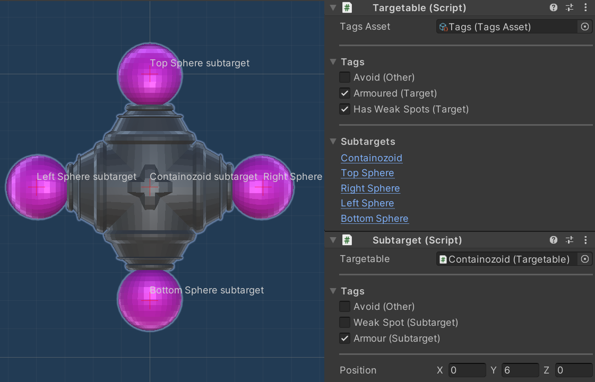

Quick Turret
I set out one night to try and make a turret in Unity as fast as I possibly could. I ended up making it into a small game demo!
As a game, it's not the most complete product. I'm quite proud of the internal systems that make it work however, so let's take a look.
Dealing Damage!
I love the game Risk Of Rain 2. Whenever I play it I'm always so impressed at how smoothly the game handles vast amounts of damage being dealt all over the place.
You have the players unleashing hell, the enemies fighting back, and environmental hazards taking damage and exploding. I know the game is made in Unity, and clearly all these situations were using the same underlying system for dealing damage.
So I set about finding a clean and scalable design that emulated Risk Of Rain:

By leveraging Unity's design based around MonoBehaviour components, I was able to encapsulate anything damage related in its own Hurtable world. Anyone in the universe beyond that can simply subscribe to the appropriate events if they want to know "who hurt you?"
The best thing about this design however is how easily it can be reused on anything else in the game. If I later wanted to make the mobs fight back against my turrets, or I wanted to implement exploding barrels, I simply attach Hurtable to the GameObjects and give Hurt() a call.
Displaying Damage!
Damage in Risk Of Rain can come in a huge variety of types, and the type of damage is communicated through the style of the text that appears when something gets hurt.
Recreating this in a clean and super scalable way was a good challenge!

Unlike in Risk Of Rain, my damage system allows for multiple damage types to be present at once. I wanted the text to be stylable in a manner that reflects this. I was inspired by the workflow of CSS, and tried to recreate that behaviour.
I know that Unity's TextMeshPro component has a "stylesheet" feature, but this is not actually the same as CSS, and could not deliver the behaviour I wanted. I found a design for my code that gave me the multiple simultaneous text stylings that I was after, with an elegant solution for unstyled text.
Each Stylesheet ScriptableObject represents a collection of styles, presented in order of priority. Meanwhile, each Styling ScriptableObject connects a DamageType to a variety of cosmetic options for text. Each of the cosmetic stylings available in a Styling object are optional, allowing for the different DamageTypes to be represented using different qualities of the text. This is how multiple DamageTypes can be presented at once.
What happens to this system if I decide later than I need to add new damage types? Nothing! There is a default style that can be used as a fallback for each of the styling options. The default styling can happily apply to damage of the new type until it's time to create a custom Styling. This is super designer-friendly!
For example, critical damage creates large and long-lasting text with a red outline, while blocked damage has a high priority to produce text that's coloured dark grey. These mutually exclusive overrides can be applied simultaneously to make it clear to the player when their critical hits are getting blocked:

Getting Around!
I extended the Unity Editor with custom behaviour all throughout this project.
This started when I began designing the path that the mobs would follow. I had a big mess of waypoint GameObjects and references to them. It was an absolute nightmare to keep track of which waypoints were where, and what connections existed between them. Making even a small change to the path proved to be a massive task.
I began encapsulating this complexity neatly within a single component, whose custom Editor behaviour made working with the waypoints much simpler. It wasn't long before I'd invented a new category of speedrun:

Target Acquired!
To make the game more interesting I decided I would design a powerful targetting system. Not only did I think this would enable me to create diverse enemies, I also thought it would give the player interesting choices for target prioritisation. In the next and final section we will meet the different types of ammo the turrets can fire, and I thought this would complete the core strategic problem posed by the game.
As it happens, the enemy design/targetting choice/ammo choice interaction wasn't as fruitful as I imagined.
With that said, I don't believe the design of the targetting system was at fault. What really hampered me is sheer inexperience with Blender. I basically threw together whatever basic geometry I could muster, and the resulting designs didn't really mesh with the targetting system in the way they could have. To spend that time learning Blender would've been to go out of scope of this project, so the original designs stuck.

What I imagined is that, over time within a level, the player could develop their own style of defensive system built from a choice of turrets working together as units. Faced with a diverse array of threats, the player could have intelligent turrets that swap targets to deliver their ammo in the places where they'd make the most difference.
I imagined such a system would work through enemies being composed of various subtargets. Then each enemy is tagged not just as a whole, but each subtarget has some tags as well. A boss enemy could be a high priority for lots of turrets across the player's defences. Other enemies might sponge up damage until a particular subtarget is destroyed by a turret with the right kind of ammo - at which point that enemy becomes weak to everyone and that turret can look elsewhere.
I do believe I implemented a system which could deliver this kind of experience, but the final Quick Turret demo didn't really have the scale or calibre of enemies to fully make use of it.
I'm proud of the system all the same.
The Quick Turrets!
Remember how turrets were the focus of this project?
Their final design was quite different from the quick turret I built that first night!

I broke the functioning of the turret down into many components, each one implementing a single behaviour - that's why they're called MonoBehaviours. While the coordinating job of the turret controller might seem complex, the interface of each turret component can be super simple, and the turret controller code thus reads like the simple sequence of steps that are depicted above.
The most interesting component here is the Autoloader! I was inspired by the game War Thunder, in which you can equip your aircraft with different belts of ammunition to match the target that you expect to be using the ammo on. Each Warthunder ammo belt is composed of a variety of bullet types mixed in different proportions. The design is realistic and that brings immersion, while also being practical in preventing any one belt from straying too far from general purpose use.
I built my Autoloader component to mimic this behaviour, except the player can customise the ammo in more detail. You can repeatedly call DrawChamberedRound() to get the AmmoType instances from the belt in order, looping back around at the end. This is another super modular component, and it's game designer friendly too. I wrote a really nice custom Inspector for configuring the belt, and it is smart enough to skip over any null bullets without failing.
Summary
This project was great experience for me, and really highlighted to me how my Unity knowledge has developed over the years. The MonoBehaviour components I wrote had great modularity. This is evidenced by the fact that I've been able to lift them out of this project and into my private reusable code package. Furthermore, the custom Editor scripts I wrote really enhanced how easy it was to configure and use the components, making it much easier to change and improve the design of the game.
With that said, the game design as a whole could do with some work. As mentioned above, I was limited by my rudimentary Blender skills, and couldn't really give myself an opportunity to fully flex the muscles of the intelligent targetting system. Something for the future.
Thanks for reading!